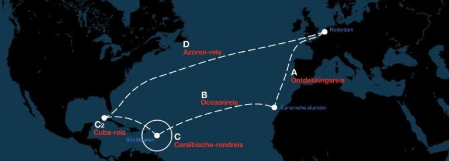

Het masterskip-programma biedt jongeren uit 4 HAVO/VWO en 5 VWO met een bètaprofiel de mogelijkheid om te leren voor school én te leren zeilen op een groot zeilschip, Wylde Swan. Het schip vaart tussen oktober en juni een route van 12900 zeemijl van Harlingen naar Tenerife, St Maarten, Cuba, De Azoren en weer terug naar Harlingen. Deze route is verdeeld in 5 etappes. Op elke etappe kan een groep van maximaal 35 scholieren meevaren.
Aan boord hebben de jongeren school, leren ze over navigatie, krachten die spelen bij het zeilen, de techniek aan boord, meteorologie, de samenstelling van het zeewater, de bestudering van het zeeleven en leren ze het schip zelf bezeilen en besturen. Leren voor school wordt dus gekoppeld aan alles wat ze dagelijks meemaken.
Het schip Wylde Swan
Wylde Swan is een grote zeilschoener met twee masten en snel tuigage (1130 m2) die ooit gebouwd is als haringjager (zonder masten) en in 2010 is omgebouwd tot een tweemastschoener die in 2011 de Tall Ships Races won. Het schip is zeer modern uitgerust en wereldwijd gecertificeerd door de scheepvaartinspectie om te mogen varen als zeiltrainingsschip. Onderdeks is ruimte om te slapen, te studeren en te leven.
Bron: https://www.masterskip-wyldeswan.com/het-schip/
Zelfstudie
Voordat ik op reis ging heb ik, in overleg met mijn docenten, een plan voor mijn schoolwerk voor de komende 6 weken gemaakt. Ik heb met hen overlegd over de toetsen, die ik meenam in een gesloten envelop zodat ik ze aan boord op de wekelijkse toetsdag kon maken. Aan boord was weinig ruimte dus alle leerstof moest worden opgeslagen op mijn computer. Van te voren moest ik dus zorgen dat alles offline op mijn laptop stond. Dat was bij mijn school geen ingewikkeld probleem omdat we daar al bijna alle lesstof via de computer aangeboden krijgen. 6 dagen per week is er 3 uur zelfstudie per dag. Ook dat sluit mooi aan bij de werkwijze van Unic. Ik had dus niet veel problemen met mijn schoolwerk.
Centrale lessen
Naast de 3 uur zelfstudie per dag zijn er verdiepende bètalessen, die worden gekoppeld aan het leven aan boord. De lessen sluiten aan bij de vakken die ik op school heb en laten me op een andere, levendige manier kennis maken met de leerstof. Denk hierbij aan meteorologie, de samenstelling van zeewater, krachten die spelen bij het zeilen op de zeilen en de masten en bestudering van het zeeleven.
Mijn etappe
Ik ging zelf mee met route A: van Harlingen naar Tenerife (voor de westkust van Afrika). Dit was een tocht van 2000 zeemijl, waarin we bij 4 landen aan hebben gelegd en 38 dagen onderweg waren. Ik wilde mee met deze route omdat je bij deze route zowel lange tijden op zee bent als dat je langs veel landen komt. Ook leek het mij erg bijzonder om te voelen hoe het klimaat stukje bij beetje warmer wordt naarmate je dichter bij de evenaar komt.